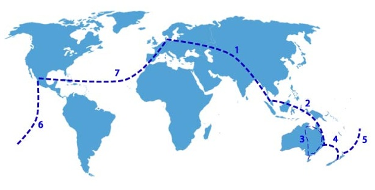

Vi har brugt næsten et år på at planlægge turen. Så selvom vi ikke skal se hele verden er hver destination valgt med omhu.
Her på siden kan du læse om de forskellige steder vi skal besøge, hvor vi skal hen og i hvilken rækkefølge.


Vi har brugt næsten et år på at planlægge turen. Så selvom vi ikke skal se hele verden er hver destination valgt med omhu.
Her på siden kan du læse om de forskellige steder vi skal besøge, hvor vi skal hen og i hvilken rækkefølge.

1. Danmark - Thailand
1.11 - 17.11 2007
Første etape bringer os til Sydthailand, nærmere betegnet Krabi. Vi skal dog lige lande i Bangkok, men vi flyver videre med det samme.
Efter 1 uge her, skal vi videre syd på, hvor vi skal sejle rundt på en række små øer i en uges tid.
Derefter skal vi nogle dage tilbage til Krabi inden vi drager videre på næste etape af turen
2. Thailand - Australien
17.11 2007
Vi flyver fra Phuket videre til Singapore og herfra til Brisbane
3. Rundt i Australien
18.11 2007 - 15.1 2008
De næste 2 måneder skal vi tilbringe i Australien,
hvor vi skal på en større rundtur
4. Australien - New Zealand
15.1 - 15.3 2008
Nu går turen videre til NZ. Her skal vi være i 2 måneder, og efter en periode med mange planer, skal vi nu bo i en Camper, og cruise rundt på må og få. Eneste fix punkt er en udflugt til Doubtful Sound. Vi regner med at bruge 5 uger på sydøen og 3 uger på nordøen.
5. New Zealand - Cook Island
15.3 - 29.3 2007
Efter New Zealand skal vi videre til Polynesien.
Vi skal bo på to forskellige øer: Rarotonga og Aitutaki.
6. Cook Island - USA
29.3 - 30.3 2008
Turen er ved at være slut og vi vender snuden hjemad.
Det bliver en lang tur hjem, med et enkelt stop i Los Angeles.
7. USA - Danmark
30.3 - 31.3 2008
Sidste etape er et lang flyvetur over Frankfurt og videre til København. De 5 måneder er gået og vi er hjemme igen.
Hvad er klokken?
Vi er jo omme på den anden side af jorden det meste af tiden, men her kan du få hjælp til at finde ud af hvad klokken er, der hvor vi er.